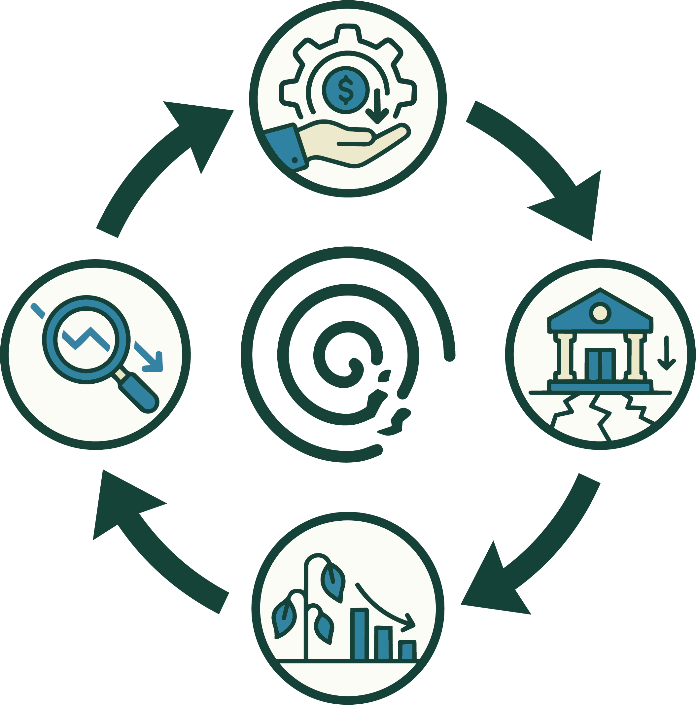

The overhead myth: the first number donors check is the worst one
The donor’s guide in this series called the program expense ratio “the single most abused number in the sector,” treated it as a screen and never a verdict, and left a promissory note: there’s a whole “overhead myth” argument here that deserves its own post. This is that post. The claim is stronger than “the ratio has a trap in it.” The claim is that a decade of the ratio being the headline number donors, watchdogs, and grantmakers fixate on has actively made nonprofits worse — that the metric doesn’t merely mismeasure quality, it degrades it. The people best positioned to know this are the ones who used to sell the metric, and in 2013 they said so in writing.
What the ratio actually is
To be precise about the target: the program expense ratio is program-service spending divided by total spending, straight off Part IX of the Form 990. Its complement — everything not booked as program — is overhead: management, general administration, and fundraising. “Low overhead” and “high program ratio” are the same statement. The intuition behind fixating on it is honest enough: a dollar in overhead is a dollar that didn’t reach the mission, so minimize overhead and maximize good. That intuition is the myth. It fails because it assumes overhead is waste, and it isn’t — overhead is the organization’s capacity to do the work at all.
The people who sold the metric recanted it
In June 2013 the CEOs of the three largest sources of nonprofit information — GuideStar, Charity Navigator, and the BBB Wise Giving Alliance — published an open letter to the donors of America titled “The Overhead Myth.”1 These are the organizations whose entire business was rating charities, and the letter’s purpose was to tell donors to stop using the rating they were best known for. The overhead ratio, they wrote, is “a poor measure of a charity’s performance.” Overhead costs “include important investments charities make to improve their work: investments in training, planning, evaluation, and internal systems.” And the operative verb: focusing on overhead alone, they said, “starves charities of the freedom they need to best serve the people and communities they are trying to serve.”
That is not an outside critic; that is the referee ejecting himself from the game. A year later the same coalition wrote a second letter, this one to the nonprofits, urging them to stop marketing their low overhead — to stop feeding the thing that was eating them.2 When the institutions that built the scoreboard tell you the score is misleading, the burden of proof flips: the question is no longer “why distrust the ratio,” it’s “why is anyone still quoting it.”
Why the number is easy to fake
Start with the mechanical problem, because it undercuts the ratio even before we get to the damage. The three expense buckets are soft. Every organization has to split each cost — a salary, a mailing, a software license — across program, management, and fundraising, and that split is a judgment call the organization makes about its own return. The rules (functional-expense allocation, and the “joint cost allocation” rules for activities that mix fundraising with program or education) leave genuine room, and a fundraising appeal that contains a paragraph of “public education” can, under those rules, book part of its cost as program.
So the number bends toward whoever is reporting it, in both directions. An organization that wants a flattering ratio classifies aggressively — the executive who spends half her time on program delivery has half her salary moved out of “management,” a gala with a mission-education component sheds cost into “program.” The direction of the bias is set by what the org thinks donors want to see, which means the ratio partly measures the sophistication of the org’s accountants, not the efficiency of its programs. This is the empirical finding underneath the rhetoric: accounting researchers such as Daniel Tinkelman have shown for years that reported fundraising and overhead ratios are weak, gameable predictors of the outcomes donors claim to care about.3 A number that good organizations can post low by investing wisely and bad organizations can post low by lying is not a measurement. It’s a Rorschach test.
The starvation cycle: how the metric eats the sector
The mechanical critique says the ratio is noisy. The serious critique says the ratio is corrosive, and it has a name. In 2009, Ann Goggins Gregory and Don Howard laid out the nonprofit starvation cycle in the Stanford Social Innovation Review.4 It is a feedback loop, and it runs like this:
- Funders and donors carry an unrealistic idea of what it costs to run an organization well — the overhead should be tiny, the money should “all go to the cause.”
- Nonprofits, competing for that money, report the low overhead the funders expect — partly by the aggressive classification above, and partly by actually underspending on the unglamorous things: accounting systems, IT, evaluation, staff training, fundraising capacity, reserves.
- The starved infrastructure makes the organizations weaker and less able to demonstrate results, which confirms the funders’ suspicion that nonprofits are inefficient and shouldn’t be trusted with overhead —
- — which tightens the expectation, and the loop pulls another turn.

The engine of that loop (Figure 1) is exactly the metric this post is about. Because “low overhead” reads as virtue, the rational move for a nonprofit competing for scarce dollars is to cut the capacity that would let it do the mission better — and to hide the cuts it can’t afford to make. The ratio doesn’t just fail to detect dysfunction; it rewards it and manufactures it. Recent work continues to document the mechanism: a 2025 study traces how overhead-ratio pressure still drives real misreporting and underinvestment across the sector.5 Sixteen years after Gregory and Howard named it, the cycle is not a historical artifact.
Why the low end is the real red flag
Here is the inversion that the donor’s guide gestured at and this post can state flatly: a suspiciously high program ratio — 95% and up — is more often a warning than a virtue. It means one of a few things, none of them “well run”: an organization too small or too young to have built real infrastructure; one starving itself on exactly the cycle above; or one whose accountants are simply better at the classification game. The genuinely healthy organization — the one that pays competitive salaries, keeps a three-to-six-month reserve, runs an evaluation function, and invests in the fundraising that will fund next year — will very often post a lower program ratio than the fragile one next to it. On this metric, and only on this metric, the fragile org wins (Figure 2). That should end your confidence in the metric.
What to look at instead
None of this means finances are unknowable — it means the single ratio is the wrong lens, and the fix is triangulation, which is the whole method of the donor’s guide. Read the four numbers together and across several years, reframing each question as in Table 1:
| Instead of asking | Ask |
|---|---|
| Is overhead low? | Is overhead appropriate for this org’s size, age, and mission? |
| What’s the program ratio this year? | Which direction is it moving over three to four years, and why? |
| How little does it spend on itself? | Does it hold a real reserve and invest in the systems that deliver the mission? |
| Does the CEO earn “too much”? | Is comp reasonable against the budget and comparable orgs (Part VII, Schedule J)? |
Table 1. Reframing the four screens: for each overhead-flavored question on the left, the question on the right is the one that actually tracks organizational health.
The watchdogs have followed their own advice. In its September 2023 methodology overhaul, Charity Navigator removed the administrative-expense ratio, the fundraising-expense ratio, and program-expense growth from its scoring, folding what remained into a broader rating built on finance and accountability, impact, and governance rather than a single efficiency fraction.6 The scoreboard the 2013 letter disowned has, a decade on, been partly dismantled by the people who ran it. Dan Pallotta’s argument from the same period — that we ask charities to do more and more while forbidding them the overhead, growth capital, and risk-taking every for-profit takes for granted — is the same point from the operator’s chair.7
The two sides of the same coin
This is where the series closes on itself. To a donor, the overhead myth is a reason to distrust the first number you’re tempted to trust, and to read the 990 as a movie rather than a photograph. To an operator, the myth is a trap you’re under pressure to walk into — and the free-tools post in this series is, read in this light, a way to keep genuine capacity off your overhead line: infrastructure you own for near zero doesn’t inflate the ratio you’ll be judged on, so you get the systems without paying the reputational tax for them. The myth punishes capacity; owning your stack is one way to build capacity the myth can’t see.
The data to do any of this the right way already exists and is public — every 990, every year, on the ProPublica Nonprofit Explorer and through the tools at noprofits.org that pull exactly these figures. The transparency was never the hard part. The hard part is resisting the one seductive number and reading the rest. The overhead ratio isn’t just a poor screen; treated as a verdict, it has spent a decade making the sector it claims to measure a little worse. The best thing a donor can do with it is know why to distrust it.
This is a plain-language overview, not tax, legal, or financial advice. Benchmarks and watchdog methodologies change; the 2023 Charity Navigator update is one example, and terms may have shifted again since. Where a figure or standard matters to a giving decision, confirm it against the organization’s current filings and the watchdog’s current methodology.